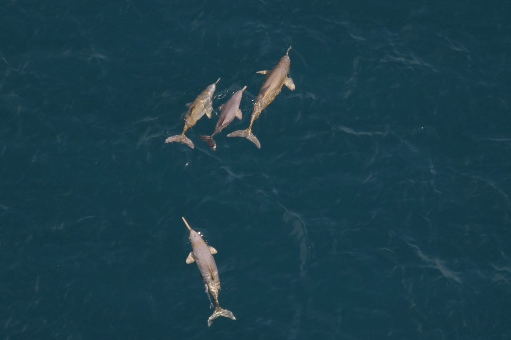

Conservation Management Plan · Pontoporia blainvillei
Franciscana dolphin (toninha): evidence and assessment dashboard
The franciscana, known in Brazil as toninha, is assessed as — globally (IUCN, —) and as — in Brazil (—). Abundance estimates were found for — of its — management areas; the IWC plan lists — actions, and — of the — activities of the renewed CMS Concerted Action still need funds.

At a glance
A graphical summary of the sections below. Each panel opens the section it summarises; point at a mark for details.
Conservation status
— → —
IUCN global category, then Brazil's national list. The FMA Ia population was assessed independently as Endangered.
Management areas
— of —
Franciscana Management Areas (FMAs) have an abundance estimate in the sources reviewed; dashed squares have none.
Threats
Bycatch in gillnets is the main threat throughout the range; mortality exceeds sustainable limits in every area assessed.
IWC CMP actions
—
actions in four strategic lines; — of those measured have fewer than 10 PubMed records (orange outline).
CMS Concerted Action 2026–2029
— of —
planned activities are stated as needing funds (outlined squares).
Literature (PubMed)
—
records name the species; bars show records per year since 2000.
Population structure and abundance
Eleven management units are recognised by the IWC Scientific Committee: ten subdivisions of the four original Franciscana Management Areas plus Babitonga Bay (Cunha et al. 2020; IWC 2023). The northern population (FMA Ia) belongs to the subspecies P. b. pukusi; the rest are P. b. blainvillei. Study-level abundance estimates are shown on a logarithmic scale.
Horizontal axis: estimated number of individuals (logarithmic scale). Estimates differ in method, survey area and year and must not be summed. Units with no estimate in the sources reviewed: —. Values for FMA Ib, Babitonga and FMA III marked “national assessment” are compiled in the SALVE/ICMBio assessment (Sucunza et al. 2025), whose summary does not name the original surveys.
Management units and evidence coverage
| Unit | Country | Range | Estimates | Values reported | Remarks |
|---|
Range and places named in the plan
The franciscana lives in coastal waters, mostly inside the 30–50 m isobath, from Itaúnas (18°25′S, Espírito Santo) to the north coast of the San Matías Gulf (42°10′S, Argentina). Numbered markers show places named in the CMP actions and the CMS documents.
Coastline and borders: Natural Earth 1:50m. The range line follows the mainland coast between the two limits and does not show gaps within it, such as the gaps between FMAs Ia, Ib and IIa. Marker positions are approximate. IMMA boundaries are not shown, because the IUCN IMMA dataset was not available in this session.
| No. | Place | Relevance |
|---|
Threats
Threats as described in the CMS Concerted Action and the 2021 synthesis by Secchi et al., with the CMP actions that address each one. The link between threats and actions is proposed here and is not stated in the plan.
| Threat | Type | Standing | Evidence of impact | Areas | Linked actions |
|---|
No threat scoring forms (IUCN–CMP overall or fisheries forms) were available for the franciscana; if they exist, they can be added as in the Guiana dolphin dashboard.
IWC Conservation Management Plan: actions
The IWC adopted the Franciscana CMP in 2016, its first for a small cetacean. Its actions, as reproduced in CMS Concerted Action 14.5 (2024) for the 2022–2026 update, fall into four strategic lines. That list gives regions but not priorities, years or budgets. Bars are split by the amount of indexed evidence for each action.
| Action | Strategic line | Topic | Description | Region | PubMed records |
|---|
n/m = not measured by a literature count (cooperation, vessel monitoring and diplomatic actions).
CMS Concerted Action for the franciscana
Argentina, Brazil and Uruguay proposed a Concerted Action under the Convention on Migratory Species, adopted at COP14 (Samarkand, February 2024) and renewed at COP15 (Campo Grande, March 2026) for 2026–2029. It is designed to complement the IWC CMP. The estimated cost for the three years is USD 500,000–800,000.
The renewed Concerted Action lists — activities; — are stated as needing funds and — has a funding source identified.
Planned activities, 2026–2029
| Activity | Expected result | Time frame | Responsibility | Funding | Related CMP actions |
|---|
Related CMP actions are a correspondence proposed here and are not stated in the CMS document.
Implementation report to COP15 (October 2025)
| Activity | Status | Progress | Difficulties |
|---|
CMS resolutions addressing the main threats
Resolutions named in the renewal proposal (and, for aquatic wild meat, in the 2024 Concerted Action) as addressing the threats to the species.
| Reference | Title | Theme | Cited in |
|---|
Conservation status
Global IUCN assessments, an independent assessment of the FMA Ia population and the national lists of the range states. The species is listed in Appendices I and II of the CMS. Where a category could not be confirmed it is shown as T.
n.d. = year not recorded in the source. Lines join successive assessments within the same jurisdiction.
| Jurisdiction | Year | Category | Criteria | Source |
|---|
Range states and process
The three range states, their FMAs, their relationship to the IWC and CMS and the national instruments relevant to the species, followed by the main steps of the CMP and Concerted Action process.
| Country | FMAs | IWC | CMS | Relevant instruments |
|---|
Milestones, 2003–2029
Hollow markers denote planned steps.
Protected areas within the franciscana’s range
Protected areas (and one proposed area) in Brazil, Uruguay and Argentina that overlap the species’ coastal range, and whether their official documents name the franciscana or toninha. For each area, the creation act and, where available, the management plan or related official documents were downloaded and searched for “toninha”, “franciscana”, “Pontoporia”, “delfín del Plata” and “delfín de río”. Where an official text could not be retrieved, this is stated and the evidence is marked as secondary.
Of — areas reviewed (— created), the species is named in an official document for —: in the creation act or its official announcement for — (the Albardão national park and APA, created in March 2026), and otherwise in management plans, official area documents or the PAN Toninha. For —, the acts checked do not name it at all. Creation decrees rarely name species: in Uruguay none of the decrees checked does, although the franciscana occurs in these areas.
| Country | Protected area | Category | Creation act | FMA | Species named in | Evidence | Verification |
|---|
The list is not exhaustive: it covers areas named in the PAN Toninha, the CMS documents, the national species sheets and protected-area databases, and areas such as other coastal APAs, estuaries and municipal reserves may also overlap the range. “Act not checked” marks creation acts recorded from reference sources without reading the official text. Overlap is stated from the documents and the species’ range, not from a spatial analysis; a GIS overlay of the FMA boundaries with the national protected-area databases (CNUC, SNAP, SIFAP) would quantify it. The IUCN IMMA dataset, still to be supplied, would add the Important Marine Mammal Areas.
Legal instruments that name the species
Laws, decrees, ordinances, resolutions and plans in Brazil, Argentina and Uruguay that name Pontoporia blainvillei or its common names (toninha, franciscana, delfín del Plata, delfín de río), with what each says about the species. Each entry gives the date, its current status where known, and whether the official text was read.
The table lists — national, state, provincial or departmental instruments; the official text was read for —. Argentina has the only species-specific laws found: Río Negro declared the franciscana a protected species (2010) and Buenos Aires a natural monument (2017). In Brazil the species is named in threatened-species lists, the two cycles of the PAN Toninha and the Albardão creation; no law or decree naming it was found in Uruguay, where it appears in a departmental protected-area plan and in technical priority lists.
| Country | Level | Instrument | Date | Type | What it says about the species | Category | Status | Verification |
|---|
Not found: a federal law creating the “Dia Nacional da Toninha” (1 October is observed since 2019 by decision of a PAN workshop, not by law); a 3rd cycle of the PAN Toninha after September 2024; a regulation of Buenos Aires Ley 14.992. Not verified: whether IN MPA/MMA 12/2012 names the species, and the state lists of Paraná, Santa Catarina and Rio de Janeiro. Threatened-species lists of other Brazilian states and the Uruguayan red list should be added once their texts are checked.
Scientific literature
PubMed was searched for Pontoporia, franciscana dolphin(s), franciscanas, toninha and toninhas in titles and abstracts. PubMed indexes few regional and Portuguese- or Spanish-language journals, so PubMed counts are a lower bound. OpenAlex, an open index that also covers regional journals, theses and book chapters, is shown alongside, as is SciSpace.
OpenAlex lists — works naming the species since —, with a peak of — in —. PubMed lists — records since —, — of them from 2011 onwards. The peak was — in —; — appeared in — and — so far in —.
Download the literature lists
Personal-data protection (LGPD, Lei nº 13.709/2018): in these tables and downloads each publication is identified by year, title, journal and DOI or PubMed link, and authorship is shown only as the first author’s surname followed by “et al.”. Full author names, affiliations, e-mail addresses and other personal data are not stored or exported. The downloads list bibliographic records only; they do not include the articles themselves, which remain with their publishers.
Most recent PubMed records (live)
Retrieved live from the PubMed E-utilities API (NCBI) each time the page is opened.
| Date | First author | Title | Journal | Link |
|---|
Recent records from SciSpace (snapshot of 15 November 2026)
A snapshot of a SciSpace search run on 15 November 2026: up to one hundred of the newest records since 2015 for a question on franciscana conservation, abundance and threats. Only records naming Pontoporia, the franciscana or the toninha are kept. Records from 2025 onwards are listed; earlier ones open on request or by choosing a year. Themes come from keywords and are an aid to browsing, not a classification.
| Year | First author | Title | Venue | Theme | Citations | Link |
|---|
Most-cited works
The most-cited works in the OpenAlex snapshot of 27 November 2026; citation counts are those of OpenAlex. This file can be replaced by a Scopus or Web of Science export.
| Year | First author | Title | Journal | Citations | Link |
|---|
Evidence available for each CMP action
The number of records naming the species that match a topic defined for each CMP action. PubMed (snapshot of 15 November 2026) and OpenAlex (27 November 2026) are combined so that each document is counted once: OpenAlex records already in PubMed (same PMID, DOI or title) are not added. Topics are matched from keywords in the title (and, for PubMed, author keywords and MeSH terms), from specific phrases in the abstract, and, for OpenAlex records in Portuguese or Spanish, from the equivalent terms in those languages. The records behind each count are listed below.
Counting each document once, — records name the species: — in PubMed and a further — in OpenAlex only. The topics of — of the — actions can be matched. Evidence ranges from — records (—) to — (—). — actions have fewer than 10 records and — have none: —. On PubMed alone the number under 10 was —: OpenAlex adds the regional journals and theses where much of the work on bycatch, strandings and mitigation trials is published. Evidence from IWC papers and grey literature is still not counted.
| Action | Topic | Evidence topic | PubMed | Added from OpenAlex | Integrated | Rule |
|---|
OpenAlex records were kept when their title or abstract names Pontoporia, the toninha or the franciscana dolphin; errata, datasets (other than the SALVE assessment), software and reference entries were excluded, and duplicate versions of the same work were merged. Author names in OpenAlex are not always in surname order, so a few first-author entries may show a given name. A record may match several topics, so counts overlap and must not be added. Keyword rules are a heuristic for review by the CMP coordinators, not a manual classification. Actions RES-2.1, MON-1.4, MON-1.5 and PAC-2.1 are not measured. A low count is a gap in indexed evidence, not an absence of knowledge.
Download the publications matched to an action
The file lists the PubMed records and the OpenAlex records (not in PubMed) whose title or abstract matches the action’s topic, with year, first author’s surname followed by “et al.”, title, journal or source, all matched actions and a DOI, PubMed or OpenAlex link. It is a bibliography of the evidence counted here, not the articles themselves; matching is by keywords and should be checked before citing.
Records behind the counts
| Year | First author | Title | Journal | Matched actions | Link |
|---|
Records added from OpenAlex (not in PubMed)
OpenAlex works that name the species and are not in PubMed, with the actions each was matched to and whether the match rests on the title, the abstract or both. Regional and Portuguese- or Spanish-language journals and theses make up most of them. Records matched to no topic count only towards the total.
| Year | First author | Title | Source | Type | Matched actions | Matched on | Link |
|---|
Updating the evidence base
The page reads its data from the JSON files in the repository’s data/ folder; only the most recent PubMed records are fetched live.
- IWC CMP and assessment documents. When the IWC Comprehensive Assessment (from 2026) or a revised CMP action table is available, it is transcribed into the data files; the actions, priorities and abundance files are then replaced and the page redraws.
- Direct replacement of a data file. Edit or replace a file in
data/, keeping the same field names, and commit; the page redraws from the new file. - PubMed and SciSpace. The PubMed recent-records table is live; the SciSpace table, the annual series and the counts per action are dated snapshots, regenerated with the scripts in
tools/. - OpenAlex, Scopus and Web of Science. The OpenAlex snapshot (records per year, most-cited works and records added to the counts) can be rerun at any time; it is deduplicated against PubMed by PMID, DOI and title. Scopus and Web of Science exports can replace the most-cited file.
- IMMAs and the PAN Toninha. Supplying the IUCN IMMA dataset and the 2nd-cycle PAN Toninha objectives would add the IMMA map and a PAN evidence table, as in the Guiana dolphin dashboard.
Editorial and consistency notes
Points where sources differ or data are missing, with what has been applied in this dashboard.
| Topic | Status | Observation | Action needed | In the dashboard |
|---|
Data provenance and conventions
Management units, actions, threats, activities and milestones were transcribed from UNEP/CMS/Concerted Action 14.5 (2024), its COP15 revision (2026) and COP15 documents Doc.31.2.8 and Doc.31.3.7. Abundance figures come from the abstracts of the cited papers, retrieved through SciSpace, and are reproduced as reported without harmonisation. National listings are as cited in those documents. The literature series and evidence counts are a PubMed snapshot of 15 November 2026. Each source is listed under Sources with its date and basis.
References and credits
Dashboard prepared by the Laboratório de Ecologia e Conservação, Universidade Federal do Paraná, Paraná, Brazil.
Suggested citation: Laboratório de Ecologia e Conservação, Universidade Federal do Paraná (2026). Franciscana dolphin (toninha): evidence and assessment dashboard. Supporting the IWC Conservation Management Plan for Pontoporia blainvillei.
Cover photograph: Federico Sucunza.
Data sources
- UNEP/CMS (2024). Concerted Action for the Franciscana Dolphin (Pontoporia blainvillei). UNEP/CMS/Concerted Action 14.5, adopted at COP14, Samarkand. Includes the IWC CMP actions for 2022–2026.
- UNEP/CMS (2026). Concerted Action 14.5 (Rev.COP15), adopted at COP15, Campo Grande, March 2026.
- Argentina, Brazil and Uruguay (2025). Report on the implementation of the Concerted Action for the franciscana dolphin. UNEP/CMS/COP15/Doc.31.2.8.
- Argentina, Brazil and Uruguay (2025). Proposal for the renewal of the Concerted Action for the franciscana dolphin. UNEP/CMS/COP15/Doc.31.3.7.
- Secchi et al. (2021). A synthesis of the ecology, human-related threats and conservation perspectives for the endangered franciscana dolphin. Frontiers in Marine Science 8: 617956.
- Sucunza et al. (2023). Distribution, population size and IUCN Red Listing of an isolated population of the threatened franciscana. Endangered Species Research. doi:10.3354/esr01262.
- Crespo et al. (2026). Abundance estimation of franciscana dolphins by means of aerial surveys in Buenos Aires province, Argentina. Mastozoología Neotropical. doi:10.31687/saremmn.26.33.02.07.e1297.
- Danilewicz et al. (2010). Abundance estimate for a threatened population of franciscana dolphins in southern coastal Brazil. J. Mar. Biol. Assoc. UK 90: 1649–1657.
- Secchi et al. (2001). A first estimate of franciscana abundance off southern Brazil. J. Cetacean Res. Manage. 3: 95–100.
- Cremer & Simões-Lopes (2008). Distribution, abundance and density estimates of franciscanas in Babitonga Bay, southern Brazil. Revista Brasileira de Zoologia 25: 397–402.
- Cunha et al. (2014). Population structure of the endangered franciscana dolphin: reassessing management units. PLOS ONE 9: e85633; Cunha et al. (2020) as cited in CMS CA 14.5.
- Brazil, Ministério do Meio Ambiente: Portaria MMA nº 444/2014 and nº 148/2022 (national list of threatened species); ICMBio Portarias nº 91/2010 and nº 655/2019 (PAN Toninha).
- Sucunza et al. (2020). Distribution, habitat use, and abundance of the endangered franciscana in southeastern and southern Brazil. Marine Mammal Science. doi:10.1111/mms.12650.
- Sucunza et al. (2025). Ficha de Pontoporia blainvillei. Sistema de Avaliação do Risco de Extinção da Biodiversidade (SALVE), ICMBio. doi:10.37002/salve.ficha.14512.3.
- Priem et al. (2022). OpenAlex: a fully-open index of scholarly works, authors, venues, institutions, and concepts. arXiv:2205.01833 (openalex.org).
- Natural Earth (1:50m cultural vectors, world-atlas 2.0.2), public domain, naturalearthdata.com.
- PubMed, National Center for Biotechnology Information, U.S. National Library of Medicine (pubmed.ncbi.nlm.nih.gov).
- SciSpace (scispace.com), scholarly search used for abundance abstracts, the recent-records table and citation counts.
Hover over or touch a chart mark for details. The data behind every figure are the JSON files in the data/ folder of the GitHub repository.